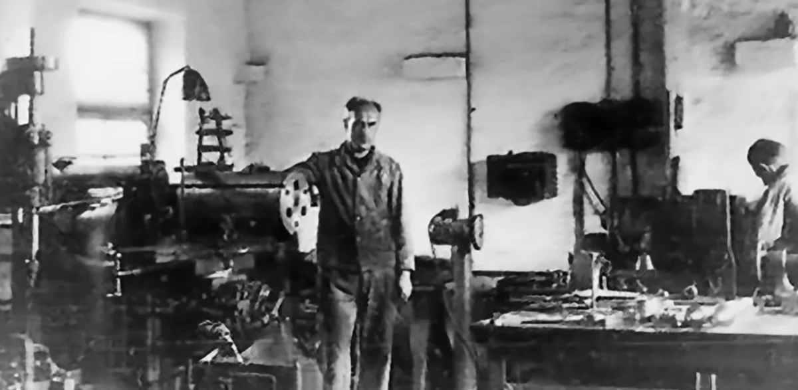
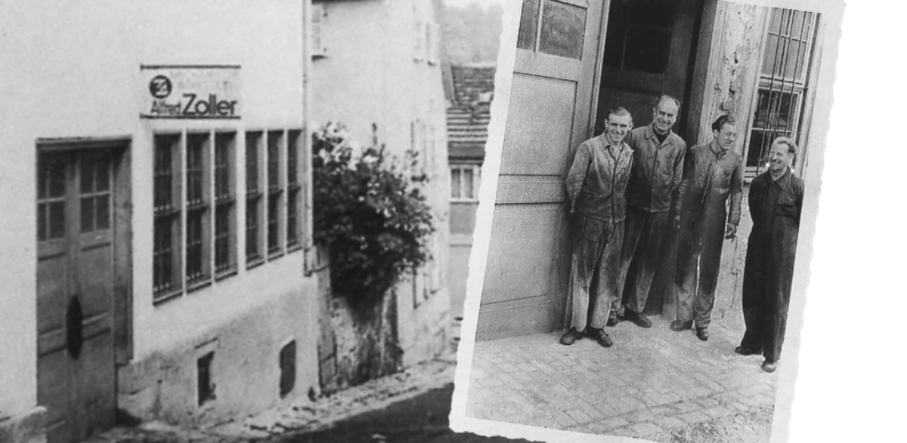

Regreso y nuevo comienzo
Alfred Zoller regresa de Berlín a Ludwigsburg. Durante nueve años había estado destinado como maestro mecánico en Hirth Flugmotoren. El 1 de septiembre, Alfred Zoller funda su taller mecánico en la calle Bogenstraße de Ludwigsburg. La Segunda Guerra Mundial había finalizado hacía apenas cuatro meses. Las condiciones iniciales corresponden a una situación difícil. Por un lado, hay mucho que reparar, pero, por otro, escasean las herramientas, el material y las máquinas.

Alfred Zoller
Calle Bogenstraße en Ludwigsburg

Plumas estilográficas, encendedores, mangueras de bomberos
Alfred Zoller repara motores, mangueras de bomberos, juguetes infantiles, plumas estilográficas y cualquier otra cosa que le traigan. Adicionalmente, repara máquinas defectuosas. Son la base para fabricar sus propios productos.
En particular, sus encendedores de aluminio, que fabrica en su máquina giratoria|torno, tienen un gran éxito. Con el tiempo, los soldados estadounidenses se convierten en sus clientes más importantes. Pagan los encendedores principalmente con cigarrillos, mantequilla de cacahuete o chocolate.